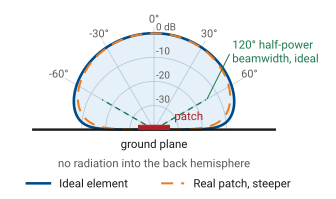
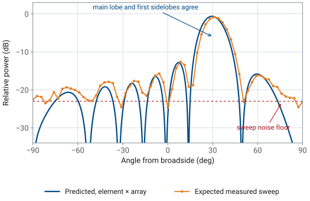

L21 - Antenna Pattern#
Antenna Pattern
The array factor is not the antenna pattern.
Lesson 21 · Antennas, Phased Arrays, and Radar Systems · Dr. Neil Rogers
Printing
To print the slides, switch to present mode and print: one slide a sheet, with room for notes. Print from read mode for the whole lesson.
Learning Objectives
- I can distinguish between array factor and true antenna pattern and account for element pattern effects.
In the L18 Lab you measured the array’s beam, and Lesson 20 showed that most of the numbers landed where the array factor said they would: a half-power beamwidth near \(13^\circ\), a first null about \(15^\circ\) off the peak, and first sidelobes roughly 13 dB down. The parts that did not match are the subject of this lesson. Your steered peaks were a little low and a little short of the commanded angle, the sidelobes on the two sides of the beam were not the same height, and there was structure behind the array that the array factor says cannot exist. Each of those comes from the element pattern, the hardware, or the room, and each of them is predictable.
The Pattern Is a Product
\(AF\): element positions and phases. \(EF\): one element’s own pattern.
Near broadside a patch is nearly uniform, \(EF \approx 1\), so \(AF\) alone held.
Everything the array factor gets wrong off broadside comes from the element factor.
Every trace you have recorded on the PHASER is a received-power sweep: the software steps the commanded steer angle across the scan range, applies the phase ramp for each step, and records the power out of the beamformer while the HB100 source sits still. By reciprocity that trace follows the array’s pattern, but the x-axis is the commanded steer angle, not a measured arrival angle. What the array does with the incoming wave at each step is exactly what it would do to a transmitted wave, so the sweep is a legitimate way to read a pattern.
The quantity that sweep traces out is the full antenna pattern, and the array factor is only half of it. Lesson 16 established pattern multiplication for an array of identical elements,
where \(AF(\theta)\) carries the geometry and the phasing of the array and \(EF(\theta)\) carries the pattern of one element sitting in that array. Up to now we have compared measurements against \(AF(\theta)\) alone, and it held, because near broadside a patch radiates almost uniformly and \(EF \approx 1\) across the main lobe. Once we steer the beam off broadside, that approximation no longer holds.
The array factor is not the antenna pattern. The array factor is what the element positions and phases contribute; the pattern is that product with the element’s own pattern. Everything the array factor gets wrong off broadside comes from the element factor.
The Ideal Element
Field pattern \(\sqrt{\cos\theta}\); half power at \(\pm 60^\circ\), a \(120^\circ\) beam.
\(D_e = 4\), or 6.0 dBi: the course’s scan-loss model.
The eight radiators on the PHASER are microstrip patches over a continuous ground plane. A patch is a half-wavelength resonant cavity radiating from the two open edges, and the ground plane underneath it is large enough that almost nothing reaches the back. Two consequences follow, and both are visible in your data.
First, the element radiates into one hemisphere with a broad, smooth pattern whose peak is at broadside. Start with the ideal element, the one that collects exactly its share of the array’s aperture. Lesson 2 tied gain to effective aperture for every antenna, \(G = 4\pi A_e/\lambda^2\). Seen from an angle \(\theta\) off broadside, that share of aperture presents its projected area \(A\cos\theta\), so the element gain follows the projected area:
which is a field pattern of \(\sqrt{\cos\theta}\). This is the projected-aperture rule, and it is the model the course uses for scan-loss numbers. It puts the element half-power points at \(\pm 60^\circ\) for a \(120^\circ\) beamwidth. The directivity follows from Lesson 2’s \(D = 4\pi U_\text{max}/P_\text{rad}\), with \(U = U_0\cos\theta\) over the front hemisphere only:
A Real Patch Is Steeper

Measured patches: \(\cos^{1.3}\theta\) to \(\cos^{1.5}\theta\), about \(105^\circ\).
Versus ideal: 0.3 dB more loss at \(30^\circ\), 1.2 dB at \(60^\circ\).
A real patch is steeper than the ideal element. Measured embedded elements roll off roughly as \(\cos^{1.3}\theta\) to \(\cos^{1.5}\theta\) in power, for beamwidths near \(105^\circ\). The same integral with \(\cos^n\theta\) gives \(D_e = 2(n+1)\), or 6.6 to 7.0 dBi: a steeper element concentrates its power toward broadside, so its directivity rises even as its wide-angle gain falls. In practice that means about 1 dB of extra loss at wide scan and a negligible difference near broadside: the ideal rule and a \(\cos^{1.4}\theta\) element differ by 0.3 dB at \(30^\circ\) and by about 1.2 dB at \(60^\circ\). Use the ideal rule for predictions and expect measurements to sit between it and the steeper curve.
The Ground Plane Removes the Back
No pattern behind the board, so the scan stops at \(\pm 90^\circ\).
The patch pattern falls steadily toward the horizon.
A bump at \(\pm 80^\circ\) is a wall, a bench, or a person.
Second, the ground plane removes the back hemisphere. That is why the PHASER scans over \(\pm 90^\circ\) and no further: there is no pattern behind the array to steer a beam into, and a commanded angle beyond \(\pm 90^\circ\) has no physical meaning for this aperture. It is also why any structure your sweep shows at large angles deserves suspicion. The pattern of a patch over a ground plane falls monotonically toward the horizon, so a bump at \(\pm 80^\circ\) is almost always energy arriving from a wall, a bench, or a person, not radiation out the back of the board.
Scan Loss
The phase ramp moves the array factor; the element envelope stays put.
\(AF = 1\) at the commanded angle, so the delivered gain is the envelope there.
The gain lost is scan loss.
Steering does not move the element pattern. The phase ramp moves the array factor, and the array factor is then multiplied by a fixed element envelope. The array factor peaks at the commanded angle with a value of exactly 1, so the gain the array delivers in that direction is the element envelope evaluated there. The gain lost this way is called scan loss.
Gain Bookkeeping
All in dB; uniform excitation, \(N\) identical elements.
Only the element term depends on scan.
The bookkeeping is a sum in decibels. For \(N\) identical elements with uniform excitation, the \(N\) fields add in phase at the beam peak, so the peak intensity is \(N^2\) times one element’s, while the total radiated power is only \(N\) times one element’s. The ratio, the array’s peak gain, is the gain of one element times \(N\):
and the element term carries the scan dependence. The projected-aperture rule is a power law, so it enters with a factor of ten:
The Course Array at 60°
Term |
Broadside |
Steered to \(60^\circ\) |
|---|---|---|
Element |
6.0 dBi |
\(6.0 - 3.0 = 3.0\) dBi |
Array, \(10\log_{10} 8\) |
9.0 dB |
9.0 dB |
Total |
15.0 dBi |
12.0 dBi |
Elements still add in phase; all the loss comes from the element.
Put the two together for the course array. The element contributes 6.0 dBi at broadside, the eight-element coherent sum contributes \(10\log_{10} 8 = 9.0\ \text{dB}\), and the broadside gain is 15.0 dBi. Steer to \(\theta_0 = 60^\circ\) and the element term drops by \(10\log_{10}(\cos 60^\circ) = -3.0\ \text{dB}\), leaving 12.0 dBi. The array gain term never changes, because the elements still add in phase; all of the loss comes from the element pattern.
Note
This 9.0 dB of coherent array gain is not the 8.9 dB array-factor directivity from Lesson 20. That number measured the beam solid angle of the array factor alone, with isotropic elements; today’s \(10\log_{10} N\) counts the coherent sum over one real element. For elements that tile the aperture the two accountings agree to within about 0.2 dB (9.03 against 8.86 dB here), which is why both appear in practice.
Worked Example: Steered to 45°
Quantity |
Work |
Result |
|---|---|---|
Element, broadside |
\(D_e = 4\) |
6.0 dBi |
Element penalty |
\(10\log_{10}(\cos 45^\circ)\) |
\(-1.5\) dB |
Array gain |
\(10\log_{10} 8\) |
\(+9.0\) dB |
Steered peak |
\(6.0 - 1.5 + 9.0\) |
13.5 dBi |
Relative to broadside |
\(13.5 - 15.0\) |
\(-1.5\) dB |
Worked example — gain of the PHASER array steered to 45°
Quantity |
Work |
Result |
|---|---|---|
Element gain, broadside |
\(D_e = 4\) for the ideal element |
\(6.0\ \text{dBi}\) |
Element penalty at \(45^\circ\) |
\(10\log_{10}(\cos 45^\circ)\) |
\(-1.5\ \text{dB}\) |
Array gain |
\(10\log_{10} 8\) |
\(+9.0\ \text{dB}\) |
Steered peak gain |
\(6.0 - 1.5 + 9.0\) |
\(13.5\ \text{dBi}\) |
Peak relative to broadside |
\(13.5 - 15.0\) |
\(-1.5\ \text{dB}\) |
A real patch element, steeper than the ideal, loses about 0.6 dB more at this angle, so a measured peak near \(-2\) dBc is the expected result.
Three Numbers to Remember
Steering to \(30^\circ\), \(45^\circ\), \(60^\circ\) loses 0.6, 1.5, 3.0 dB. At \(60^\circ\) the array factor’s beam also widens from \(13.2^\circ\) to \(30.5^\circ\), which sets the \(\pm 60^\circ\) practical scan limit.
We should memorize three numbers, and they are the same three for any array built from aperture-like elements: steering to \(30^\circ\) loses 0.6 dB, to \(45^\circ\) loses 1.5 dB, and to \(60^\circ\) loses 3.0 dB. Lesson 20 gave us the beamwidth,
which gives \(13.2^\circ\) at broadside and \(26.4^\circ\) at \(60^\circ\); the array-factor pattern itself is \(30.5^\circ\) wide there, since the rule underestimates a wide-scanned beam. Gain and beam shape degrade together: by \(\pm 60^\circ\) the array has lost 3 dB of gain for an ideal element, closer to 4 dB for a real patch, and more than half of its angular resolution. Those two losses together set the \(\pm 60^\circ\) practical scan limit that designers quote for patch arrays.
The Beam Pulls Inboard
The envelope falls faster on the outboard side, so the lobe tilts toward broadside.
Commanded \(60^\circ\): peak at \(56.8^\circ\), width \(22.9^\circ\) against the array factor’s \(30.5^\circ\).
We quote scan loss at the commanded angle.
The beam shape degrades in a second way that the array factor alone does not predict. The envelope falls faster on the outboard side of the beam than on the inboard side, so the steered lobe becomes asymmetric, its peak pulls a few degrees toward broadside, and its half-power width comes out narrower than the array factor’s. A \(60^\circ\) command on this array peaks at \(56.8^\circ\) with a \(22.9^\circ\) width, against the \(30.5^\circ\) of the array factor alone (Lesson 20). The gain at that pulled-in peak is 0.2 dB higher than the gain at the commanded angle, so we quote scan loss at the commanded angle, the more conservative of the two.
Element Times Array
The widget below multiplies the two curves for you. Set the element factor to isotropic and sweep the steer angle: the scan loss stays at 0 dB and the peak lands exactly on the commanded angle, which is the array factor you measured in the L18 Lab. Switch to the ideal element and sweep again, and watch three things — the scan loss reading \(-0.6\), \(-1.5\), and \(-3.0\) dB at \(30^\circ\), \(45^\circ\), and \(60^\circ\), the peak angle lagging the command, and the sidelobes on the far side of broadside dropping below their mirror images on the near side. The third setting is a real patch, steeper by about a decibel at wide scan.
The Inboard Sidelobe Reads Higher
Commanded \(30^\circ\): the array factor says \(-12.8\) dB on both sides.
Inboard reads \(-12.2\) dBc: the peak fell 0.6 dB, the sidelobe did not.
Outboard, at \(59.6^\circ\): \(-15.2\) dBc.
Note
We quote sidelobe levels relative to the peak, and the element factor moves the peak. With the beam commanded to \(30^\circ\), the array factor predicts \(-12.8\) dB for the first sidelobe on either side. The product puts the inboard sidelobe at \(-12.2\) dBc, higher than predicted, because the peak itself fell 0.6 dB while that sidelobe sits near broadside where the envelope is flat. The outboard sidelobe at \(59.6^\circ\) lands at \(-15.2\) dBc. The array factor is unchanged in both cases; only the reference level moved.
Four Effects Multiplication Misses
Effect |
Result |
|---|---|
Mutual coupling |
fills nulls, shifts far sidelobes 1-2 dB |
Edge elements |
two halves of the pattern differ |
Phase and gain errors |
raise the sidelobe floor, limit null depth |
The room |
false lobes where the pattern is weak |
Pattern multiplication assumes every element has the same pattern and the same excitation. Four effects break that assumption, in roughly this order of size on an eight-element array.
Mutual coupling. Each patch is a few tenths of a wavelength from its neighbors, close enough that the field radiated by one element induces current on the others. The element therefore does not radiate the pattern it would in isolation, and it does not present the same input impedance either. The practical result is that the eight elements have slightly different embedded patterns and slightly different effective gains, which fills in nulls and raises far-out sidelobes by a decibel or two. Pattern multiplication uses one average element pattern for all eight and cannot represent the difference.
Edge effects. Coupling is not the same for every element, because the two end elements have a neighbor on one side only. On an eight-element array that is a quarter of the aperture behaving differently from the middle, which is enough to make the two halves of a measured pattern unequal even with a perfectly symmetric taper. On a large array the end elements are a small fraction of the aperture, so the effect is much smaller.
Amplitude and phase errors. The ADAR1000 sets phase in \(2.8125^\circ\) steps and gain in finite steps, the cables and traces are not identical lengths, and the calibration is only as good as the day it was run. Random errors of a few degrees and a few tenths of a decibel raise the sidelobe floor and limit how deep a null can be made. Lesson 23 treats the quantization and squint parts of this quantitatively.
The measurement environment. The lab is not an anechoic chamber. Energy reflects off benches, walls, and people, arrives at the array from directions the source is not in, and adds to whatever the pattern is doing there. The effect is largest where the true pattern is weakest, which is why far-out sidelobes and any apparent backlobe are the least trustworthy parts of a trace.
The Range Must Be Long Enough
\(D = 98\) mm between the outer element centers, at 10.3 GHz.
Level comparisons, such as scan loss, need 1.2 m or more.
The range also has to be long enough. From Lesson 5, the far-field distance is \(r \ge 2D^2/\lambda\) with \(D\) the largest aperture dimension; for the course array, \(D = 98\ \text{mm}\) between the outer element centers and \(\lambda = 29.1\ \text{mm}\) at 10.3 GHz, so
A 1.2 m separation clears that with room to spare, so the curvature of the incoming wavefront produces less than the \(22.5^\circ\) (\(\lambda/16\) of path) of edge phase error the criterion allows. Clearing the far field is not the same as reading levels cleanly, though: in the Module 3 dry run a 1 m range showed only 0.2 to 0.4 dB of scan loss at \(30^\circ\) and \(45^\circ\), while about 1.2 m gave \(-0.7\) dB at \(30^\circ\), on the prediction. Take any level comparison at 1.2 m or more.
Predicted vs. Measured

Commanded \(30^\circ\). Main lobe and first sidelobes match; the rest drifts.
In the L21 Lab you hold the beam fixed and carry the source around the array on a taped arc, which records the pattern against a physical angle, then compare that trace to the electronic sweep. Both traces should show the same main lobe, and both will disagree with the array-factor prediction in the same places. The figure below is what to expect for a beam commanded to \(30^\circ\).
Three Zones to Read
Zone |
What to expect |
|---|---|
Main lobe, first sidelobes |
peak within \(2^\circ\), sidelobes within 1 dB |
Middle sidelobes |
recognizable, not quantitative |
Below about \(-23\) dBc |
noise floor; a null only reads “deeper” |
Read it in three zones. The main lobe and the first sidelobes on either side are where the prediction holds: peak angle within a couple of degrees, half-power width within a degree or two of theory, and first sidelobes within about 1 dB. The middle sidelobes are recognizable but not quantitative, since coupling and element differences have moved them around. Everything below about 23 dB down is the sweep’s noise floor, the level the L20 Lab nulls filled to, and a null that reads \(-24\) dBc tells you only that the null is deeper than the floor.
Grid Steps and Angle Offsets
One \(2.8125^\circ\) phase step is about \(0.9^\circ\): beamwidth reads up to \(1^\circ\) off.
An offset in the angle axis slides the whole trace without changing its shape.
Right shape, peak at \(31.8^\circ\) for a \(30^\circ\) command: check the setup.
Two mechanical facts also show up. The sweep steps the element-to-element phase one \(2.8125^\circ\) LSB per point (Lesson 18), which moves \(\sin\theta\) by \(0.0163\), about \(0.93^\circ\) of angle near broadside and \(1.08^\circ\) at \(30^\circ\). The sweep can place a peak or a null only at the nearest grid point, and each half-power crossing can be off by half a step, so the beamwidth can read up to about \(1^\circ\) off from the grid alone. And when you carry the source by hand, the angle axis is only as good as the taped marks and where the source sat at boresight: a uniform offset of a degree or two shifts the whole trace sideways without changing its shape. The Module 3 dry run found commanded peaks reading \(1.8^\circ\) to \(2.7^\circ\) high for exactly this reason. A trace whose shape matches theory but whose peak sits at \(31.8^\circ\) for a \(30^\circ\) command points to the setup, not the antenna.
Summary: Pattern and Element
Symbol / idea |
What it is |
Number to remember |
|---|---|---|
\(F(\theta) = EF(\theta)\ AF(\theta)\) |
pattern multiplication |
the pattern is the product, never the array factor alone |
\(G_e(\theta) = G_e(0)\cos\theta\) |
ideal element, projected-aperture rule |
\(120^\circ\) beamwidth, \(D_e = 4\) (6.0 dBi) |
Ground plane |
removes the back hemisphere |
scan range \(\pm 90^\circ\); a backlobe in the trace is the room |
Summary: Scan Loss and Gain Bookkeeping
Symbol / idea |
What it is |
Number to remember |
|---|---|---|
Scan loss |
gain at the commanded angle, rel. broadside |
\(-0.6\), \(-1.5\), \(-3.0\) dB at \(30^\circ\), \(45^\circ\), \(60^\circ\); about 1 dB more for a real patch |
dB bookkeeping |
element gain plus array gain |
\(6.0 + 9.0 = 15.0\) dBi at broadside |
Beam pulling |
product peak sits inboard of the command |
\(56.8^\circ\) predicted for a \(60^\circ\) command |
Summary: Errors and the Range
Symbol / idea |
What it is |
Number to remember |
|---|---|---|
Coupling and edges |
elements are not identical in-array |
fills nulls, moves far sidelobes 1-2 dB |
\(r \ge 2D^2/\lambda\) |
far-field distance, \(D = 98\ \text{mm}\) |
0.66 m at 10.3 GHz; level comparisons need 1.2 m |
Sweep noise floor |
where the prediction stops being testable |
about 23 dB below the peak |
Practice
Looking Ahead
The L21 Lab: measure the pattern two ways, electronic sweep and a walked source.
Compare both to \(AF\) alone and to \(EF \cdot AF\); bring today’s numbers.
L22: design the sidelobes with a taper.
In the L21 Lab you will measure the array’s pattern two ways — the electronic sweep you already know, and a fixed beam with the source carried around it on an arc — and compare both against an array-factor prediction and an element-times-array prediction. The scan loss, the peak pulling, and the asymmetric sidelobes in this lesson are the specific things that separate the two predictions, so bring the numbers with you.
After that, Lesson 22 stops treating the sidelobes as something to explain and starts treating them as something to design. Tapering the element amplitudes trades beamwidth and peak gain for sidelobe suppression, and the trade is quantitative. Before the next class, review your L18 Lab measurement tables and mark every place where a measured number sat outside the tolerance you expected, since those are the rows this lesson has now explained.